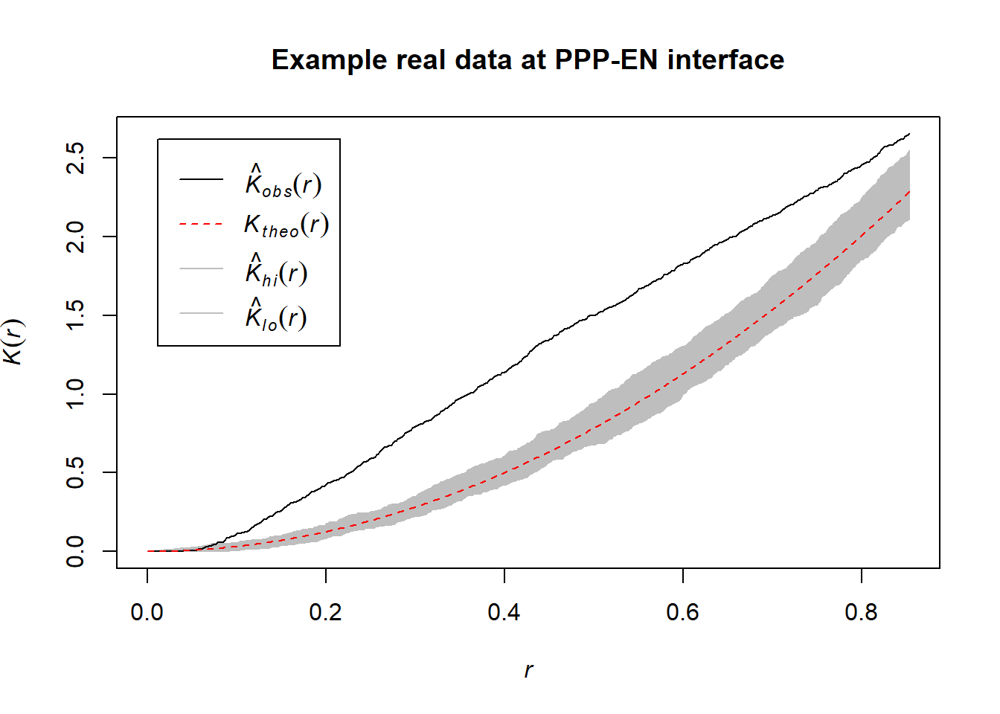
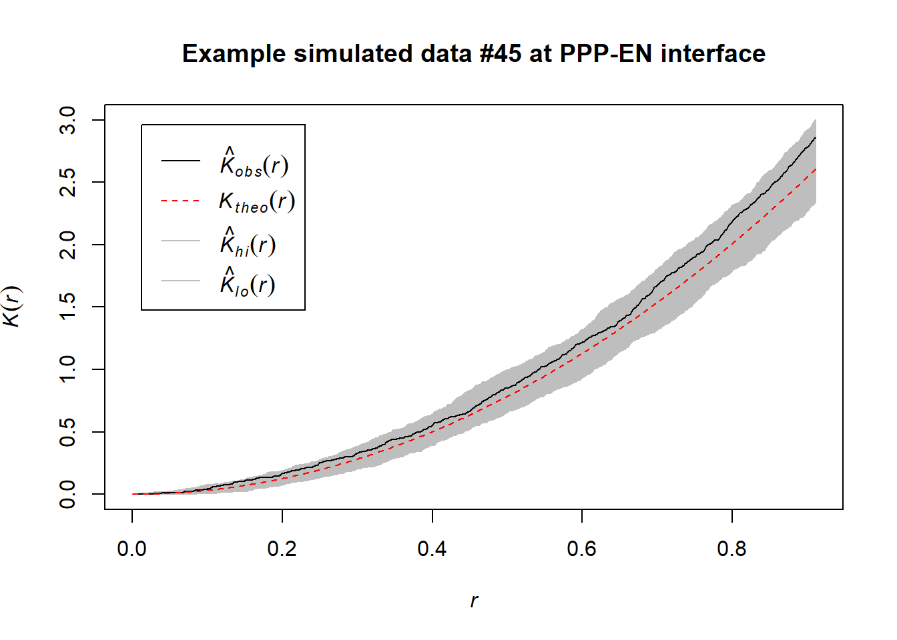

Alternative approaches
In the paper we provided one pipeline for the analysis of the data generated by the plugins. Many other approaches are in principle possible and are actually warmly invited. In response to a reviewer’s suggestion, here we show an alternative strategy for the analysis of PD distributions. This approach employs Ripley’s K function implemented in the spatstat package. We highlight advantages and pitfalls. Overall, if this approach was to be implemented in the future, it will require, for precision, the spatial edges of the segmented wall and, for robustness, effect size assessments.
Exploring an example of real data at PPP-EN
At this interface in the paper, using Euclidean distances and KS tests, we had detected clustering of PDs. Ripley’s K test, as shown below, seems to agree with this result. Please note that it was run on a single cell and not on the entire dataset.
library(tidyverse)
library(broom)
setwd('./Data_individual_cells')
PPP_example_real <- read_csv("170314_Col_HD_R20_339-381um_DNN_PPP1-EN_Ann.csv") %>%
as.data.frame %>%
select(c(LabelPositionXunits, LabelPositionYunits, LabelPositionZunits)) %>%
rename("X_units"="LabelPositionXunits") %>%
rename("Y_units"="LabelPositionYunits") %>%
rename("Z_units"="LabelPositionZunits") %>%
mutate(Genotype = "Col-0") %>%
mutate(DatasetFilename = "170314_Col_HD_R20_339-381um_DNN_PPP1-EN") %>%
mutate(Interface = "PPP-EN") %>%
mutate(IterationNumber = "real")
# we first perform a pca, reducing our data to a 2D situation
# we scale the data
PPP_example_real_pca <- PPP_example_real %>% select(X_units, Y_units, Z_units) %>% prcomp(scale. = TRUE)
# we can check that the PCA is not causing a signicant loss of information
tidy(PPP_example_real_pca, matrix = "pcs") %>% print() ## # A tibble: 3 x 4
## PC std.dev percent cumulative
## <dbl> <dbl> <dbl> <dbl>
## 1 1 1.54 0.785 0.785
## 2 2 0.784 0.205 0.990
## 3 3 0.172 0.00983 1# more than 90% retained in all cases in the first two dimentions
# we attach the pca columns contained in pca object to the original data
# 1 and 2 only take the first two PCAs, we are not attaching third PCA
PPP_example_real <- cbind(PPP_example_real, PPP_example_real_pca$x[, 1:2])
# to use Ripley's K test we need to load the spatstat package
#install.packages("spatstat")
library(spatstat)
# we then need to create a spatial object with the ppp function that includes the x and y coordinates of the points (here PC1 and PC2) and also the overall space the points sit in. Because the the segmented wall cannot be easily imported in R here we need to use an approximation of the space obtained with max() and min() functions on PC1 and PC2
# THIS IS NOT STRICTLY SPEAKING PRECISE and it is why we favoured the Euclidean distances approach in the paper, as that approach does not require any surface information.
# Please remember this limitation is using this
PPP_example_real_pattern <- ppp(PPP_example_real$PC1, PPP_example_real$PC2, c(min(PPP_example_real$PC1),max(PPP_example_real$PC1)), c(min(PPP_example_real$PC2),max(PPP_example_real$PC2)))
# we can summarise the obtained spatial area
summary(PPP_example_real_pattern)## Planar point pattern: 129 points
## Average intensity 7.27042 points per square unit
##
## Coordinates are given to 8 decimal places
##
## Window: rectangle = [-2.5556158, 2.6436893] x [-1.9129159, 1.4996804] units
## (5.199 x 3.413 units)
## Window area = 17.7431 square units# we now run the Ripley's test
# we use envelope function rather than the Kest one alone to additionally determine the significance of the patterns. The function simulates some number of datasets (nsim = ...) by permuting the locations of input data and then obtaining the range of K values across a range of distances for each permuted dataset. The gray area obtained will represent the 95% confidence intervals for complete spatial randomness based on these simulations of data. The correction argument incorporates an edge correction with different potential models
plot(envelope(PPP_example_real_pattern, Kest), main="Example real data at PPP-EN interface")## Generating 99 simulations of CSR ...
## 1, 2, 3, 4, 5, 6, 7, 8, 9, 10, 11, 12, 13, 14, 15, 16, 17, 18, 19, 20, 21, 22, 23, 24, 25, 26, 27, 28, 29, 30, 31, 32, 33, 34, 35, 36, 37, 38, 39, 40,
## 41, 42, 43, 44, 45, 46, 47, 48, 49, 50, 51, 52, 53, 54, 55, 56, 57, 58, 59, 60, 61, 62, 63, 64, 65, 66, 67, 68, 69, 70, 71, 72, 73, 74, 75, 76, 77, 78, 79, 80,
## 81, 82, 83, 84, 85, 86, 87, 88, 89, 90, 91, 92, 93, 94, 95, 96, 97, 98, 99.
##
## Done.
# the black line represents our data
# the red line the theoretical spatial randomness
# the grey area the confidence intervals as mentionedExploring simulated data at the PPP-EN interface
Ripley’s K test does not require our simulated data. This would be a computational advantage. Nonetheless, we run the test on some simulations. We expected them to act as negative controls (as we know these distributions have been sampled from uniform distibutions). Here we encountered some concerns: while in some simulations (#45) the test did not detect clustering (as expected) in others (#1) weak signatures of clustering were detected.
This is not fully surprising as even “random” data can experience phenomena like Poisson clumping. In addition, the boundary space between the real and simulated data (and also between different simulated data for the same cell) can be slightly different due to the min() and max() functions being used. This could cause effects we don’t fully control or forecast. That is a limitation of being unable to import the segmented wall as a spatial object.
However, these results makes us question the direct use of Ripley’s K on real data alone. They rather suggest that employing Ripley’s K might require more quantitative assessments. For instance, one could try to calculate the K curve for each simulation and see if the curve for the real data is always above the simulated ones (arching more). We invite people interested in using this function to consider this.
setwd('./Data_individual_cells')
PPP_example_simulated <- read_csv("170314_Col_HD_R20_339-381um_DNN_PPP1-EN_random_points.csv") %>%
as.data.frame %>%
mutate(Genotype = "Col-0") %>%
mutate(DatasetFilename = "170314_Col_HD_R20_339-381um_DNN_PPP1-EN") %>%
mutate(Interface = "PPP-EN")
# we now select two different simulation
PPP_example_simulated_45 <- filter(PPP_example_simulated, IterationNumber=="45")
PPP_example_simulated_1 <- filter(PPP_example_simulated, IterationNumber=="1")
PPP_example_simulated_45_pca <- PPP_example_simulated_45 %>% select(X_units, Y_units, Z_units) %>% prcomp(scale. = TRUE)
PPP_example_simulated_1_pca <- PPP_example_simulated_1 %>% select(X_units, Y_units, Z_units) %>% prcomp(scale. = TRUE)
tidy(PPP_example_simulated_45_pca, matrix = "pcs") %>% print() ## # A tibble: 3 x 4
## PC std.dev percent cumulative
## <dbl> <dbl> <dbl> <dbl>
## 1 1 1.44 0.690 0.690
## 2 2 0.943 0.296 0.986
## 3 3 0.207 0.0143 1tidy(PPP_example_simulated_1_pca, matrix = "pcs") %>% print()## # A tibble: 3 x 4
## PC std.dev percent cumulative
## <dbl> <dbl> <dbl> <dbl>
## 1 1 1.46 0.714 0.714
## 2 2 0.904 0.272 0.986
## 3 3 0.207 0.0143 1PPP_example_simulated_45 <- cbind(PPP_example_simulated_45, PPP_example_simulated_45_pca$x[, 1:2])
PPP_example_simulated_1 <- cbind(PPP_example_simulated_1, PPP_example_simulated_1_pca$x[, 1:2])
PPP_example_simulated_45_pattern <- ppp(PPP_example_simulated_45$PC1, PPP_example_simulated_45$PC2, c(min(PPP_example_simulated_45$PC1),max(PPP_example_simulated_45$PC1)), c(min(PPP_example_simulated_45$PC2),max(PPP_example_simulated_45$PC2)))
PPP_example_simulated_1_pattern <- ppp(PPP_example_simulated_1$PC1, PPP_example_simulated_1$PC2, c(min(PPP_example_simulated_1$PC1),max(PPP_example_simulated_1$PC1)), c(min(PPP_example_simulated_1$PC2),max(PPP_example_simulated_1$PC2)))
summary(PPP_example_simulated_45_pattern)## Planar point pattern: 129 points
## Average intensity 6.909588 points per square unit
##
## Coordinates are given to 8 decimal places
##
## Window: rectangle = [-2.5423422, 2.5808921] x [-2.088468, 1.5556574] units
## (5.123 x 3.644 units)
## Window area = 18.6697 square unitssummary(PPP_example_simulated_1_pattern)## Planar point pattern: 129 points
## Average intensity 7.287919 points per square unit
##
## Coordinates are given to 8 decimal places
##
## Window: rectangle = [-2.30716, 3.358493] x [-1.6954055, 1.4287757] units
## (5.666 x 3.124 units)
## Window area = 17.7005 square unitsplot(envelope(PPP_example_simulated_45_pattern, Kest, correction="best", nsim = 1000), main="Example simulated data #45 at PPP-EN interface")## Generating 1000 simulations of CSR ...
## 1, 2, 3, ......10.........20.........30.........40.........50.........60........
## .70.........80.........90.........100.........110.........120.........130......
## ...140.........150.........160.........170.........180.........190.........200....
## .....210.........220.........230.........240.........250.........260.........270..
## .......280.........290.........300.........310.........320.........330.........340
## .........350.........360.........370.........380.........390.........400........
## .410.........420.........430.........440.........450.........460.........470......
## ...480.........490.........500.........510.........520.........530.........540....
## .....550.........560.........570.........580.........590.........600.........610..
## .......620.........630.........640.........650.........660.........670.........680
## .........690.........700.........710.........720.........730.........740........
## .750.........760.........770.........780.........790.........800.........810......
## ...820.........830.........840.........850.........860.........870.........880....
## .....890.........900.........910.........920.........930.........940.........950..
## .......960.........970.........980.........990......... 1000.
##
## Done.
plot(envelope(PPP_example_simulated_1_pattern, Kest, correction="best", nsim = 1000), main="Example simulated data #1 at PPP-EN interface")## Generating 1000 simulations of CSR ...
## 1, 2, 3, ......10.........20.........30.........40.........50.........60........
## .70.........80.........90.........100.........110.........120.........130......
## ...140.........150.........160.........170.........180.........190.........200....
## .....210.........220.........230.........240.........250.........260.........270..
## .......280.........290.........300.........310.........320.........330.........340
## .........350.........360.........370.........380.........390.........400........
## .410.........420.........430.........440.........450.........460.........470......
## ...480.........490.........500.........510.........520.........530.........540....
## .....550.........560.........570.........580.........590.........600.........610..
## .......620.........630.........640.........650.........660.........670.........680
## .........690.........700.........710.........720.........730.........740........
## .750.........760.........770.........780.........790.........800.........810......
## ...820.........830.........840.........850.........860.........870.........880....
## .....890.........900.........910.........920.........930.........940.........950..
## .......960.........970.........980.........990......... 1000.
##
## Done.